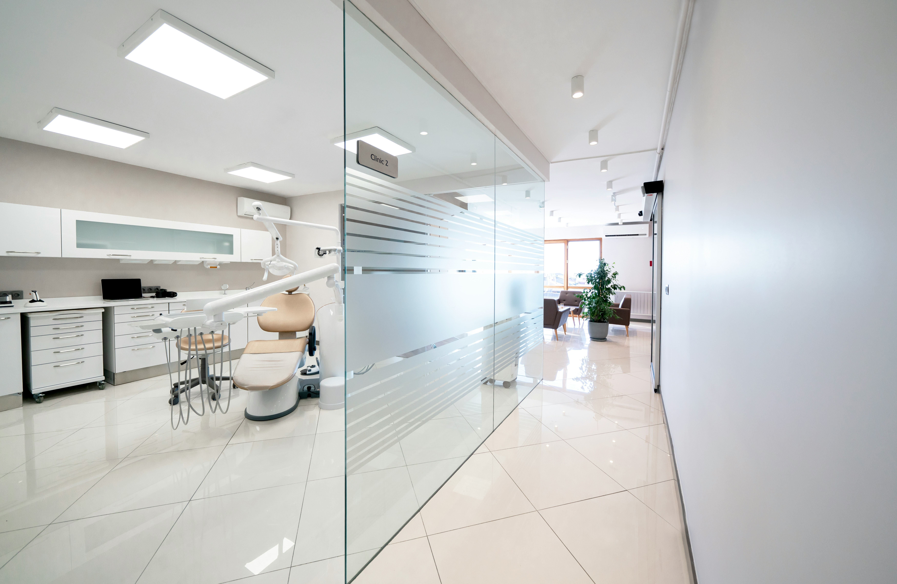

当院について
当院について

清潔で快適な診療環境
患者さんに安心して
治療を受けていただけるよう、
衛生管理を徹底し、
最新の滅菌システムを導入。
院内は明るく、清潔感のある
快適な空間づくりを
心がけています。

小さなお子さまから
ご年配の方まで通いやすい
お子さまが楽しく通えるように、
キッズスペースを完備。
また、ご年配の方や
お身体が不自由な方にも
安心してご来院いただけるよう、
バリアフリー設計 になっています。
痛みの少ないやさしい治療
麻酔の工夫や
最新の技術を取り入れ、
痛みを最小限に抑えた治療を
心がけています。
歯医者が苦手な方も、
安心して通っていただけるよう
配慮しています。
お口の健康を守る予防歯科
「痛くなったら行く」のではなく、
むし歯や歯周病を防ぐ予防ケアを
大切にしています。
定期検診・クリーニングで、
大切な歯を一生涯守ります。
清潔で最新の設備
患者さんが安心して
治療を受けられるよう、
徹底した衛生管理と
最新の歯科医療機器を導入。
快適な環境で、
質の高い治療を提供します。